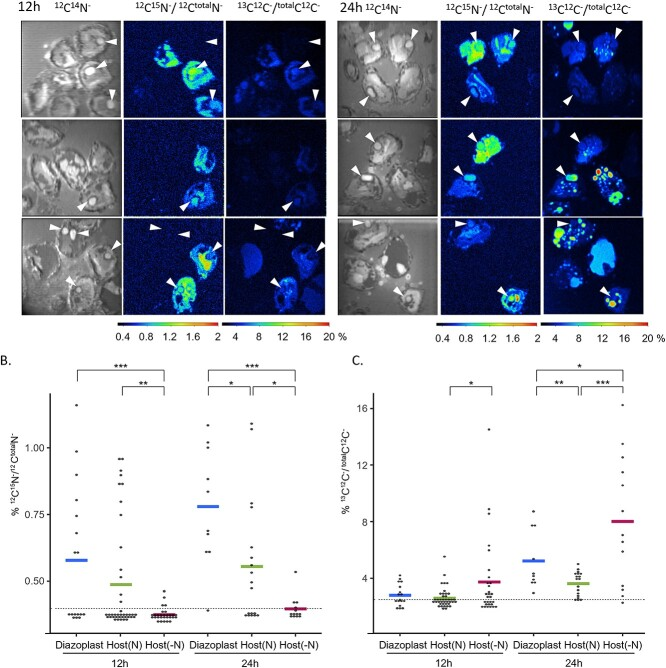

diazoplast
An obligate, membrane-bounded nitrogen-fixing compartment of Epithemia diatoms containing a reduced, nonphotosynthetic cyanobacterial endosymbiont; a metabolically integrated proto-organelle whose genetic integration remains unresolved. [DOI:10.1073/pnas.2507237122]

NCBITaxon:3042617) · Solène L Y Moulin, Sarah Frail, Thomas Braukmann, Jon Doenier, Melissa Steele-Ogus, Jane C Marks, Matthew M Mills, Ellen Yeh; CC BY, via PubMed Central · CC_BY_4_0 · source: PMC PMC11070190.1 f2 · DOI:10.1093/ismeco/ycae055Synonyms: spheroid body
Components
| Component | Type | Part of / acts on | Grounding | Genes | Stoichiometry | Essential | Role |
|---|---|---|---|---|---|---|---|
| membrane | OTHER | part of | GO:0016020 | UNKNOWN | Boundary and retained internal membranes; no photosynthetic role is asserted.
| ||
| nitrogenase complex | PROTEIN_COMPLEX | part of | GO:0016610 | nifH, nifD, nifK | UNKNOWN | Nitrogen-fixing enzyme machinery.
| |
| Uptake hydrogenase large subunit | PROTEIN | part of | REVIEWED_LABEL_ONLY | hupL | UNKNOWN | Hydrogen-recycling enzyme subunit; functional assignment, not a diazoplast-specific perturbation result.
|
Taxonomic distribution
NCBITaxon:420972Epithemia — COMMON: Reported in all described Epithemia species; physiological uniformity is not implied. [DOI:10.1073/pnas.2507237122]
Canonical examples
NCBITaxon:3042617Epithemia clementina (nom. ined.) — Butano-area isolate studied by isotope imaging, immunoblots and physiological perturbations. Cultures were monoalgal, not axenic. Taxon label verified at ENA/NCBI. [DOI:10.1093/ismeco/ycae055]
Functions
- nitrogen fixation
GO:0009399— Fixes dinitrogen within the host cell.DOI:10.1093/ismeco/ycae055Figures 2-3: isotope incorporation and nitrogenase activity.
- Fixed-nitrogen provision to the host — Transfers fixed nitrogen to the diatom host.
DOI:10.1093/ismeco/ycae055Figure 2: isotope enrichment extends into host compartments; transferred chemical species remain unidentified.
Mechanism graphs
Host carbon supports diazoplast nitrogen fixation (FUNCTION)
| Subject | Predicate | Object | Evidence |
|---|---|---|---|
| nitrogenase complex | catalyzes | nitrogen fixation |
|
| diazoplast | performs | nitrogen fixation |
|
| nitrogen fixation | supplies | Fixed nitrogen in host biomass |
|
| Host photosynthesis | produces | Host-fixed carbon |
|
| Host-fixed carbon | is transferred into | diazoplast |
|
| Host photosynthesis | supports | nitrogen fixation |
|
| Daytime darkness or DCMU treatment | reduces | nitrogen fixation |
|
Discussions
- CURATION_TODO (RESOLVED): Distinguish the diazoplast compartment from nitroplast and a genetically integrated organelle. Dedicated intracellular compartments qualify structurally without assuming demonstrated genetic integration.
- CURATION_TODO (RESOLVED): Do not promote enriched host proteins to confirmed diazoplast constituents. Enrichment can reflect contamination.
- CURATION_TODO (RESOLVED): Keep perturbation, diel and metabolic claims within demonstrated scope. Abstract wording and metabolic models exceed some direct measurements.
- CURATION_TODO (OPEN): Resolve an exact source-neutral uptake-hydrogenase large-subunit family. Broad nickel-hydrogenase families do not isolate the uptake-specific component.
- CURATION_TODO (OPEN): Identify transport substrates, transporters and division machinery directly. Metabolic and cellular integration do not establish molecular mechanisms.
Evidence
DOI:10.1093/ismeco/ycae055Moulin et al. 2024, PMID 38707843/PMC11070190. Final primary Results and Discussion read; Figures 2-4 inspected with PMC metadata MD5 verification.DOI:10.1073/pnas.2507237122Frail et al. 2025, PMID 40794833/PMC12377750. Final primary proteomics and Discussion read, not the differently titled 2024 preprint.GO:0043229Broad structural parent; no genetic-integration criterion.
Curation history
2026-10-03T14:32:11Zcodex · CREATED_RECORD — Scaffolded by scripts/new_record.py2026-10-03T14:33:31Zcodex · EXPANDED_RECORD — Added three constituent classes, verified Epithemia scope/example, nitrogen-fixation exchange graph, explicit proto-organelle/import boundaries, two follow-ups and inspected CC BY 4.0 NanoSIMS figure via the PMC adapter.